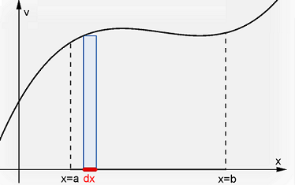
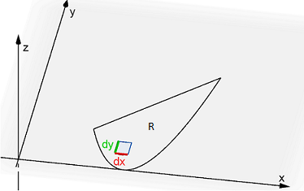
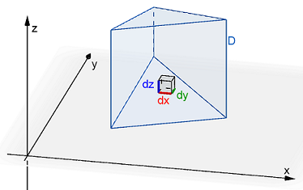

On this page, you will learn to:
- Set up and evaluate triple integrals using rectangular coordinates.
We have already looked at double integrals which extend integration over an interval on the \(x\)-axis to integration over a region in the \(xy\)-plane. Now we want to further extend this to a solid in \(xyz\)-space. Consider the comparison below to help understand the conceptual structure of the integral, double integral, and triple integral.
| Visualization | Description |
|---|---|
 |
A single integral computes the sum of the areas of infinitely many rectangles, each having an infinitely small width \(dx\), which is measured along an interval \(I\) on the \(x\)-axis. \[\underset{I}{\int} \, f(x) \, dA\] |
 |
A double integral computes the sum of the volumes of infinitely many boxes, each having a rectangular base area \(dA\) of infinitely small width \(dx\) and height \(dy\), measured over the region \(R\) in the \(xy\)-plane. \[\underset{R}{\mathop \iint } \, f(x,y) \, dA\] |
 |
A triple integral computes the sum of infinitely many hyper volumes (think 4D volume) using boxes of volume \(dV\), having length \(dx\), width \(dy\), and height \(dz\), measured over the solid \(D\) in \(xyz\)-space. \[\underset{D}{\iiint} \, f(x,y,z) \, dV\] |
When using double integrals, recall that we could use \(dA=dy\,dx\) or \(dA=dx\,dy\), meaning we could change the order of integration. This was helpful when one order of integration was easier to setup and evaluate than the other order. The same is true with triple integrals, except there are now 6 options instead of just 2. Probably the most common order of integration would be \(dV=dz\,dy\,dx\), meaning we would integrate first with respect to \(z\), then with respect to \(y\), and lastly with respect to \(x\).
Consider the following GeoGebra applet to help illustrate how we might determine the best order of integration. Using the 3 buttons on the graph to view the solid from different perspectives, which view shows a projection onto a coordinate plane of only one overlapping region?
When deciding which order to use, there are a few things to keep in mind.
- The hardest choice is which variable to integrate first. Try to pick a variable whose opposing faces remain the same over the entire solid. For example, in the illustration above, the top and bottom faces of the solid are both triangles - one directly over the other. So doing \(dz\) first would be the easiest because the \(xy\)-trace was just a single triangular region. Doing \(dx\) or \(dy\) first would be more complicated since the \(yz\) and \(xz\) traces, respectively, are formed by multiple sub-regions.
- Each step of integration eliminates a variable. So, for example, if you integrate the order \(dz\,dy\,dx\), the first (inner) integral for \(dz\) will eliminate \(z\)'s from the remaining computations. This also means that the limits of integration can be expressions containing only \(x\)'s and \(y\)'s. The second (middle) integral for \(dy\) will eliminate the \(y\)'s, leaving only \(x\)'s for the third integration, and the limits of integration for \(dy\) can only contain \(x\)'s. The limits of integration for the third (outer) integral can only contain constants.
- Once you determine the first variable, the remainder of the triple integral setup can be viewed as a double integral in the corresponding coordinate plane. So, for example, if you integrate in the order of \(dz\,dy\,dx\) and have already you determined the limits of integration for \(dz\), the rest of the \(dy\,dx\) integration involves integrating over the \(xy\)-trace.
- Be able and willing to draw multiple graphs. Drawing a rough 3D sketch of the solid will give you a good idea of how the faces, or surfaces forming the solid, relate to each other. Drawing one or more traces will help you see what the solid \(D\) would look like when viewed from each of the 3 coordinate planes. This can help determine the best order of integration as well as the limits of integration.
Given a continuous function \(f(x,y,z)\) through a solid region \(D\) in \(\mathbb{R}^3\) whose projection onto the \(xy\)-plane is a single region that can be expressed using rectangular coordinates, the triple integral of \(f\) over \(D\) can be computed using the following integral where \(D\) can be described by \(g_1(x,y) \le z \le g_2(x,y)\), \(h_1(x) \le y \le h_2(x)\), and \(a \le x \le b\) for continuous functions \(g_1\), \(g_2\), \(h_1\), and \(h_2\).
\[\underset{D}{\mathop \iiint} \, f(x,y,z) \, dV = \int_{a}^{b} \int_{h_1(x)}^{h_2(x)} \int_{g_1(x,y)}^{g_2(x,y)} \, f(x,y,z) \, dz \, dy \, dx\]Note that just like with double integrals, we change change the order of integration. With double integrals, we have \(dydx\) or \(dxdy\) as the only options. With triple integrals, there are 6 different variations. For example, if the solid \(D\) cannot be viewed as a single projection onto the \(xy\)-plane, then we might be able to view it as a projection on the the \(xz\)-plane or \(yz\)-plane which could possibly result in the following integrals, respectively.
\[\underset{D}{\mathop \iiint} \, f(x,y,z) \, dV = \int_{a}^{b} \int_{h_1(x)}^{h_2(x)} \int_{g_1(x,z)}^{g_2(x,z)} \, f(x,y,z) \, dy \, dz \, dx\] \[\underset{D}{\mathop \iiint} \, f(x,y,z) \, dV = \int_{c}^{d} \int_{h_1(y)}^{h_2(y)} \int_{g_1(y,z)}^{g_2(y,z)} \, f(x,y,z) \, dx \, dz \, dy\]The following videos work through several examples of setting up and evaluating triple integrals. Note that there is often not only one way to setup each problem.
Changing the Order
Sometimes it can be helpful if we switch the order of integration, maybe because the integration itself would be easier or because the boundaries work better in a different order. The following video shows how to change the order of integration.